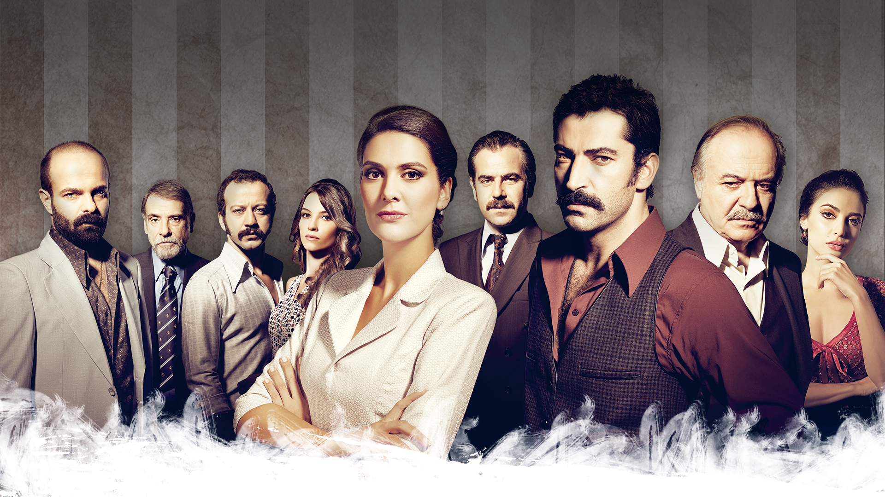
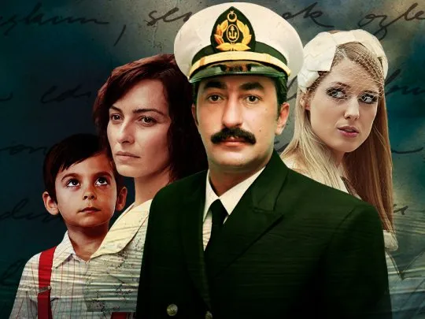
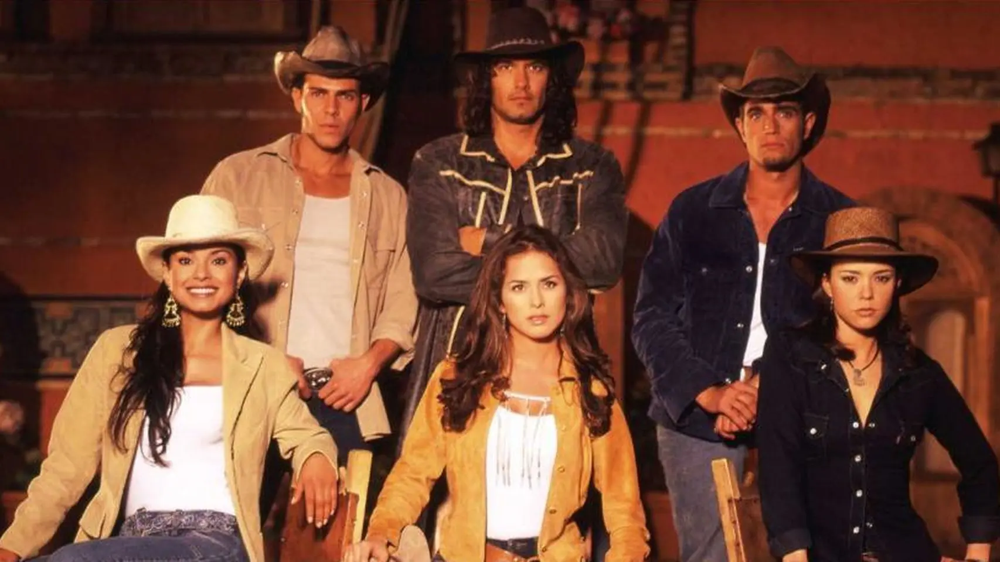

Resumen: Un hombre llamado Mahir se convierte en abogado para vengar a su padre, quien
fue encarcelado injustamente. Durante su búsqueda de la verdad, descubre secretos oscuros sobre su
familia y su pasado.

Imagen de la serie Karadayi
Personajes
Mahir
Feride
Nazif
Fazilet
Ayten
Top 2
Nombre: Tormenta de pasiones
Resumen: La historia de Ali Akarsu, un capitán de barco y padre de cuatro hijos, quien
tiene una aventura y deja a su esposa. La familia debe lidiar con las consecuencias de su decisión
mientras intentan seguir adelante con sus vidas.

Imagen de la serie Tormenta de pasiones
Personajes
Ali
Cemile
Berrin
Aylin
Mete
Top 3
Nombre: Pasión de gavilanes
Resumen: Los hermanos Reyes llegan a la hacienda Elizondo para vengar la muerte de su
hermana. Allí conocen a las tres hijas de la familia y se enamoran, pero deberán enfrentar numerosos
obstáculos para estar juntos.

Imagen de la serie Pasión de gavilanes
Personajes
Juan
Óscar
Franco
Norma
Sarita
Top 4
Nombre: Vecinos
Resumen: La serie sigue la vida cotidiana de los residentes de un edificio de
apartamentos en Bogotá, Colombia. Cada episodio muestra las situaciones cómicas y a veces absurdas en
las que se ven envueltos los personajes.
Imagen de la serie Vecinos
Personajes
Jota
Óscar
Clara
Germán
Bernardo
Top 5
Nombre: Black Mirror
Resumen: Cada episodio de esta serie antológica presenta una historia independiente
sobre los peligros y las consecuencias de la tecnología en la sociedad moderna. Desde implantes
cerebrales hasta redes sociales, Black Mirror muestra un futuro distópico no muy lejano.